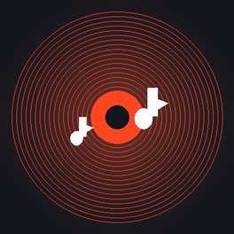

跳到主内容
需要密码访问
本数据库受密码保护，请输入访问密码查看内容。
进入数据库
密码由文档库管理员提供
本站
不制作、不修改、不存储
任何软件文件，软件资源均以第三方网盘分享链接提供；站内内容收集自互联网，仅供个人学习交流使用，请勿用于商业用途，请于下载后 24 小时内删除。如本站内容侵犯了您的合法权益，请联系站长删除（微信：
Y18725560542
），我们将在收到通知后第一时间处理。详见
免责声明
与
侵权投诉指引
。
返回列表
TOUR · DATABASE
TOUR-DB
//
旅游攻略
返回站点
拖动可自由摆放 · 点卡片进入攻略
← 返回
01
正文
02
行程地图
03
数据报表
04
景点路书
GEO / CN-PROV
−
1.0×
+
⟲
住宿点（点内为第几天）
途经点
起点
终点
行程路线
返程（原路）
行进方向
途经省份
连线为行程示意，非实际道路
「旅游攻略」栏目
本栏目受密码保护，请输入访问密码进入全屏浏览。
进入旅游攻略
进入旅游攻略
该密码仅对本栏目有效，其他受限栏目仍需各自密码
ENTRIES
—
SYS
●
READY

—
—
重试
00:00
00:00
列表
播放列表
▶